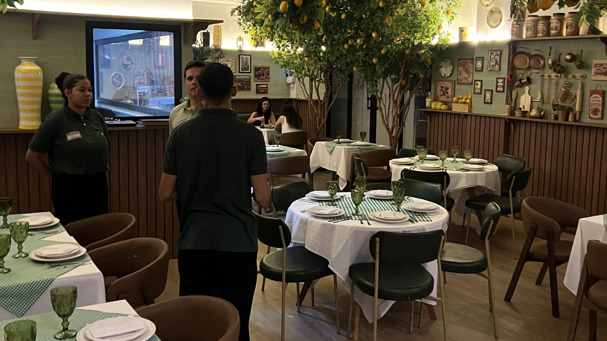
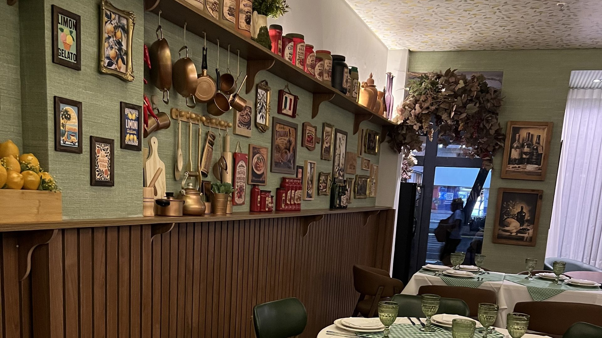
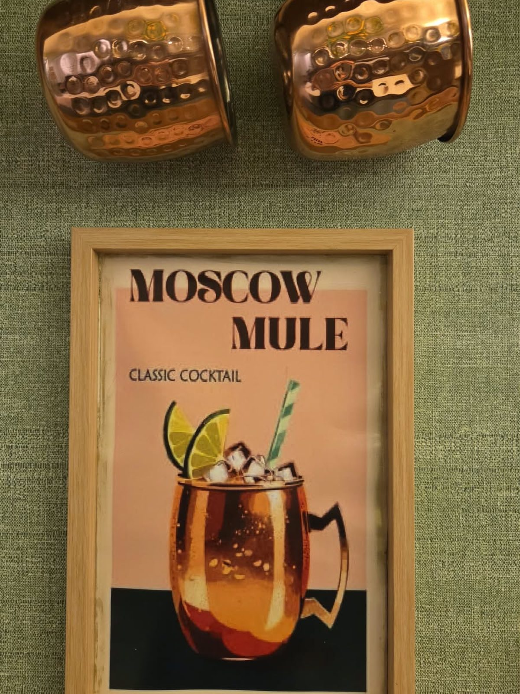
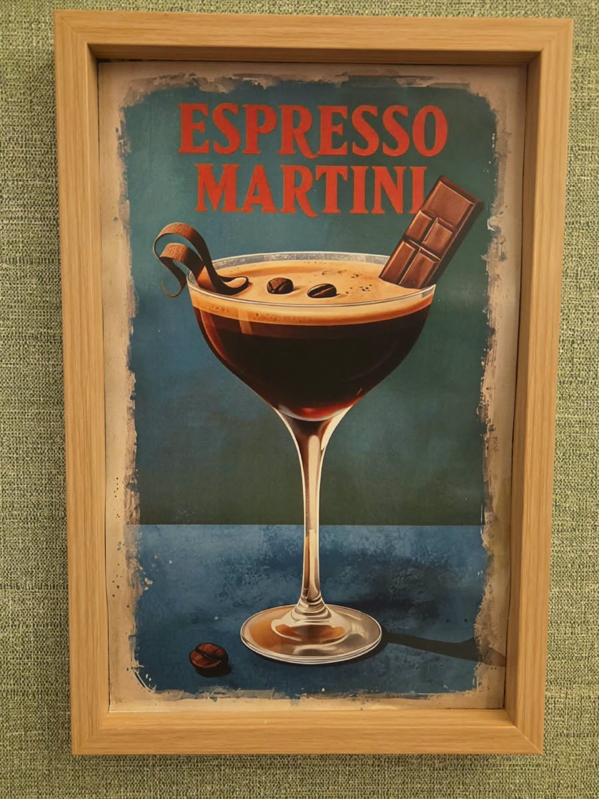
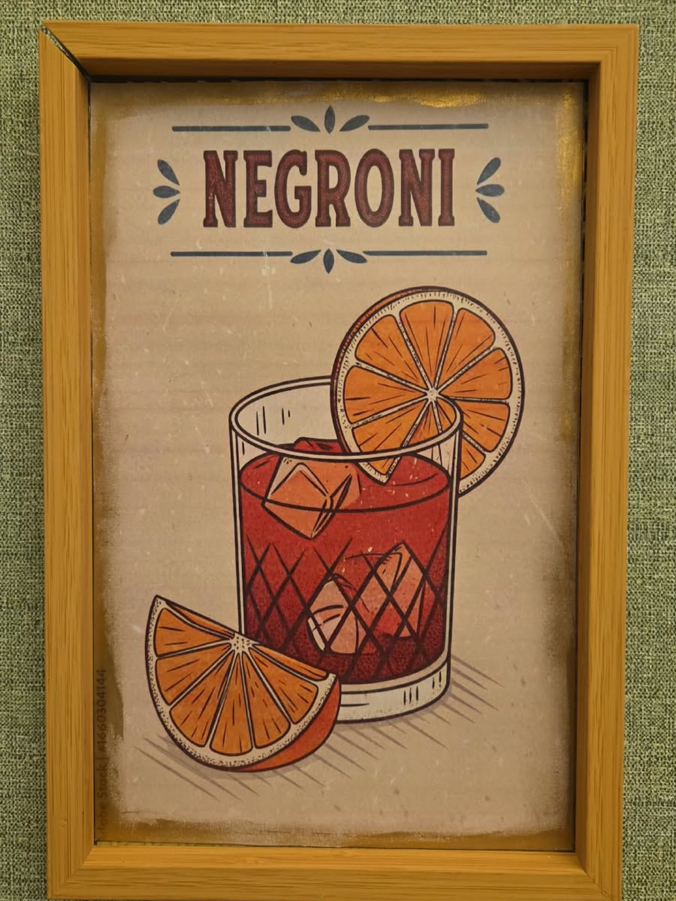
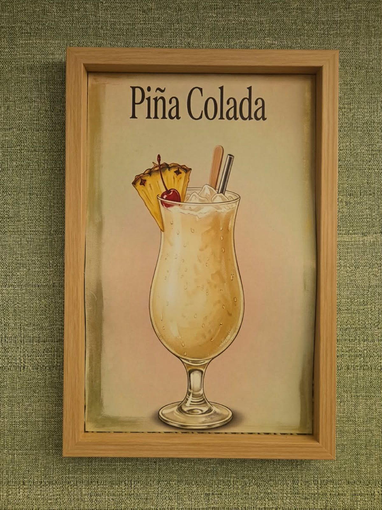
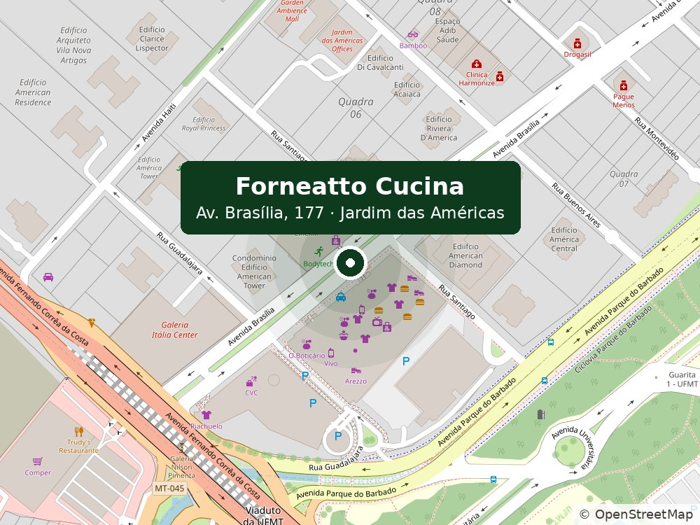

Noventa segundos
a 450 graus.
É o tempo que a pizza napolitana passa no forno a lenha — e o motivo de a borda sair alta, macia e com a marca do fogo. A massa descansa vinte e quatro horas antes de chegar lá.
A massa é aberta de manhã. Toda manhã.
Ovos, farinha e tempo — não há segredo além disso. O que sai da cozinha às sete da noite foi aberto à mão às sete da manhã, e é essa diferença de doze horas que se sente na mordida.
O molho de tomate cozinha quatro horas. O ragù, seis. A cozinha abre cedo porque é o único jeito honesto de servir cozinha italiana: quem prepara a massa na hora do pedido está servindo outra coisa.
O que fazemos
O forno, a massa e a mesa grande. O cardápio completo está a um toque; a carta de vinhos fica na casa.
 Foto — Pizza napolitana
Foto — Pizza napolitana
Pizza napolitana
Noventa segundos a 450 graus no forno a lenha. A massa descansa vinte e quatro horas antes de entrar.
 Foto — Massa fresca
Foto — Massa fresca
Massa fresca
Feita todo dia na casa.
 Foto — O forno a lenha
Foto — O forno a lenha
O forno a lenha
O fogo que dá a borda alta e a marca escura.
 Foto — A tavolata
Foto — A tavolata
A tavolata
A mesa comunitária de doze lugares, no meio da casa.
Uma carta que vale a viagem
Itália, França, Espanha, Portugal, Argentina, Chile, Uruguai e Brasil — do tinto de entrada ao Barolo, além dos espumantes e do champagne. A carta fica na casa.
Não é preciso entender de vinho para pedir bem aqui: diga o que vai comer e quanto quer gastar, que a gente resolve o resto.
Salão, varanda e a tavolata
Sessenta lugares no salão, vinte na varanda coberta e a mesa comunitária de doze lugares no meio da casa.

Foto — salão
Foto — forno a lenha
Foto — tavolata
Na parede, a casa conta o que serve.

Foto — a prateleira da cozinha
Foto — canecas de cobre
Foto — quadro do Espresso Martini
Foto — quadro do Negroni
Foto — quadro da Piña ColadaQuesta settimana · Nesta semana
Noite do vinho, menu do chef e o que mais estiver acontecendo na casa.
Vale questa settimana · Vale nesta semana
O que vale esta semana, direto do salão.
Prenotare · Reservar mesa
Sem conversa e sem esperar resposta: escolha o dia, a hora e quantas pessoas. A casa confirma em seguida. Aceitamos reserva para almoço e jantar.
Ao lado do Shopping Três Américas
Av. Brasília, 177 — Bloco A, Lojas 116 e 117
Jardim das Américas · Cuiabá/MT
Qual das três é a nossa: somos a última à direita de quem olha da rua. O vizinho é o Kikiu, e na outra ponta fica o Saikō.
Estacionamento com manobrista na porta. Aceitamos reserva para almoço e jantar.
- Terça a quinta12h00 — 15h00 · 19h00 — 23h00
- Sexta e sábado12h00 — 15h30 · 19h00 — 00h00
- Domingo12h00 — 17h00
- SegundaFechado
 Foto — fachada
Foto — fachada

Abrir no Google Maps